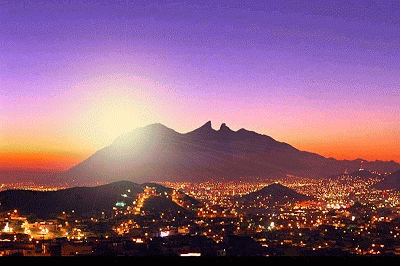
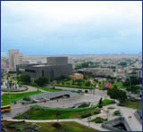
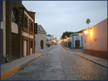
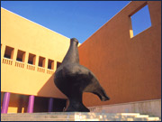
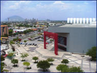
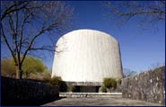
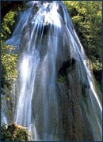
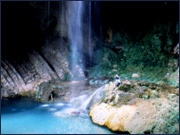

MONTERREY
Monterrey es una ciudad y capital del estado de Nuevo León. Se encuentra en la Región Noreste de México.
Es además uno de los principales centros de negocios del país. Funge como el principal epicentro industrial y económico
para el Norte de México. Según un estudio de Mercer Human Resource Consulting, en 2018 es la ciudad con mejor calidad de
vida en México, la octava en América Latina y la 110ª en el mundo. La ciudad de Monterrey alberga en su zona metropolitana
la ciudad de San Pedro Garza García la cual es el área con más riqueza en México y América Latina8. La economía se
caracteriza por ser la base de muchas empresas nacionales e internacionales como Cemex, Oxxo, FEMSA, Vitro, Grupo Alfa,
entre otras. Monterrey tiene una población de 4,190,544 habitantes.
Monterrey, México
Es la segunda ciudad más rica de México por el tamaño de la economía local con un PIB de 90,837 millones de dólares en 20159.
Monterrey es la novena ciudad de acuerdo con su PIB en los indicadores generales de las ciudades de América Latina con un ICUR
de 66,71 en 2016, contando con una renta per cápita PPA de 30, 310 dólares y un PIB per Cápita Nominal de 19,285 dólares,
siendo la más alta del país y la segunda de América Latina. La ciudad es considerada una ciudad beta debido al alto grado de
competitividad y desarrollo.11La ciudad cuenta con el edificio Torres Obispado, el cual ostenta el título de el rascacielos
más alto de América Latina.

Lugares turisticos de Monterrey
-
La macro plaza:
La Macro Plaza o Gran Plaza es, ciertamente, el punto focal del centro de la ciudad. A lo largo de sus 40
hectáreas se extiende una serie de plazas pequeñas que contienen fuentes, bancas, árboles, áreas verdes, así
como monumentos y edificaciones históricas, entre las que destaca el Faro de Comercio, el cual domina el paisaje y
es el más alto de México. En este gigantesco espacio también se ubican la Catedral de Monterrey, el Teatro de la
Ciudad, la Explanada de los Héroes, el Palacio de Gobierno, el Museo del Palacio de Gobierno y la Fuente de la Vida.

-
Barrio Antiguo
Se caracteriza por sus casas hechas de adobe y ladrillo, antigua arquitectura colonial que prevalecía
en Monterrey a principios de 1890, que fueron restauradas conservando el estilo de antaño para abrir galerías de arte,
cafés, restaurantes, bares y discotecas, convirtiéndose así en el corazón cultural y social de Monterrey.
Es recomendable dar un recorrido a pie o en calandria por este bello lugar durante el día para sentir
lo que era vivir en los tiempos del viejo Monterrey, con calles empedradas, faroles y antiguas construcciones
que definen el ambiente.

-
Museo de Arte Contemporaneo
Este museo, conocido por sus siglas como MARCO, muestra a los exponentes más destacados a niveles nacional e internacional en el área de la pintura, escultura y artes gráficas principalmente. Ubicado en el centro de la ciudad,
la entrada principal está flanqueada por una estilizada paloma de 4 toneladas y 6 m de altura, obra del artista plástico
Juan Soriano. Para que tu visita sea de lo más fructífera, MARCO cuenta con audio guía, así como guía de reflexión con
preguntas específicas para comprender el contenido de la exposición.

-
Parque fundidora
Considerado como el primer parque urbano del norte del país, el Parque Fundidora debe su nombre a la que en 1900 fuera la
Compañía Fundidora de Fierro y Acero de Monterrey, la cual en 1986 se declaró en quiebra teniendo que cerrar sus puertas.
Aprovechando el inmenso terreno y la maquinaria, el estado decidió transformar las antiguas instalaciones de esta empresa en lo
que hoy es el Parque Fundidora. Con 123 hectáreas que conjuntan historia, cultura y entretenimiento, las plazas, andadores,
jardines y lagos son escenarios naturales y seguros donde la diversión no tiene límite y es gratuita.
El complejo alberga a dos de los principales recintos para eventos en Monterrey: CINTERMEX con 5,500 m2 para
convenciones y 18,380 m2 para exposiciones, y la Arena Monterrey, centro de espectáculos único en Latinoamérica por sus instalaciones
inteligentes con capacidad para 17,600 espectadores. También se ubican aquí La Casa de los Loros, el Museo del Acero, la Pista de
Hielo Mabe Fundidora, el Parque Plaza Sésamo y La Cineteca, entre otras muchas atracciones.

-
Planetario Alfa
Creado en 1978, este museo exhibe un característico cuerpo cilíndrico inclinado hacia el norte, convirtiéndose en uno
de los pioneros en el concepto de museo interactivo. Sus numerosas áreas de actividades y de experimentación sorprenden
y divierten tanto a grandes como a pequeños. Cuenta con un área llamada Ilusión y Razón donde se podrá jugar con la física
y la astronomía para comprobar variados fenómenos científicos. También posee un aviario que aloja a las aves más exóticas,
así como una extensa colección de piezas arqueológicas prehispánicas monumentales de distintas culturas del México Antiguo.
Una de las mayores atracciones del centro es el observatorio astronómico, considerado el más completo del noreste de México,
y que permite ver a los visitantes los cuerpos celestes a través de un telescopio. Igualmente impresionante es el multiteatro
con su pantalla hemisférica de 24 metros de diámetro, donde se proyectan películas que envuelven a los espectadores con su
visión de 180 grados y sonido de alta fidelidad.

-
Cacada Cola de Caballo
Esta es una cascada de 25 metros que debe su nombre a la particular forma de su torrente, el cual recuerda a una cola de caballo.
Se puede hacer un recorrido hasta la catarata a pie, a caballo o en carreta. Es lugar ideal para hacer caminatas,
ciclismo de montaña y tomar fotografías de la flora y fauna. El ambiente se presta para picnics a lo largo del río o cerca de
las cataratas compartiendo agradables momentos en familia.

Parque Ecologico Chipinque
Uno de los principales lugares turísticos en Monterrey, Chipinque, es un paraíso natural que se encuentra a sólo 20 minutos de
Monterrey. Es el lugar favorito de los amantes de la naturaleza, el excursionismo, las escaladas, el ciclismo de montaña,
los observadores de pájaros y cualquier otro visitante que busca un poco de paz y tranquilidad, lejos del bullicio citadino.
Sus bien trazados senderos, sus caminos sinuosos y sus áreas de picnic atraen a multitudes los fines de semana, sobre todo
en la estación veraniega, cuando el clima es mucho más fresco que el de la ciudad. En otoño maravíllate con un espectáculo multicolor,
especialmente en el mes de octubre, en el que miles de bellísimas mariposas monarcas pasan por el parque durante su migración anual
hacia el sur.
